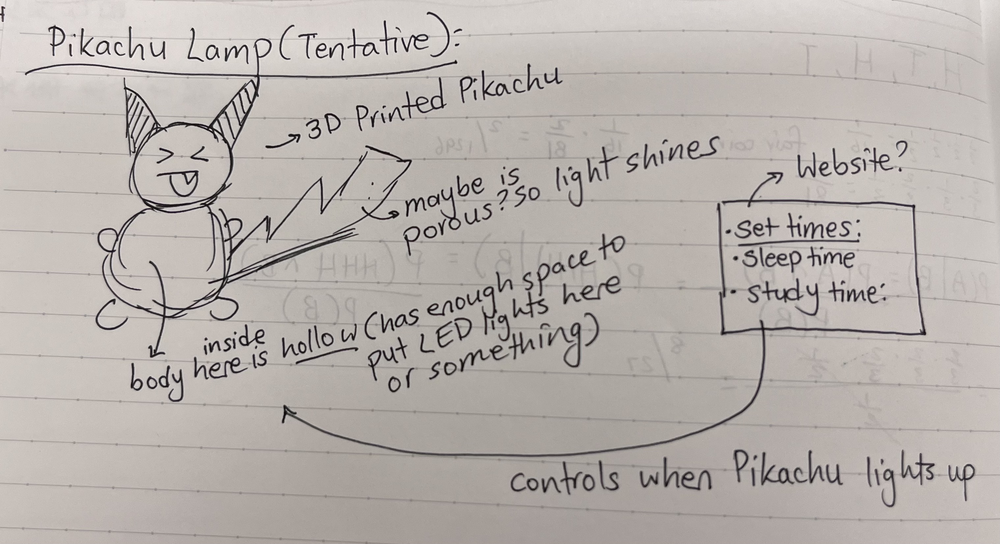
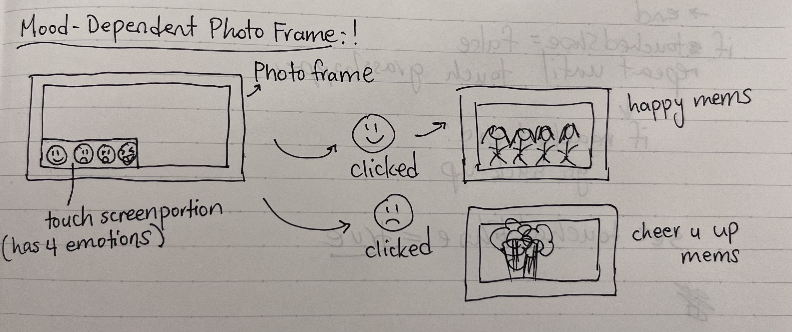

This is essentially an automated irrigation system. By placing the soil moisture sensor and the tube connected to the water pump in the same pot as the flower pot you want to irrigate, you can ensure that whenever the moisture sensor deems that the flower isn't receiving enough water, it will automatically make the water pump start pumping out water till the soil is wet enough. The LED light serves as an indicator as to whether the plant is "happy" or not (received enough water) -- if the plant is happily irrigated, the LED light will randomly flash any colors, but if it isn't well watered, then the LED light will stop. One thing to note is that Bobby helped me fix the issue of the water pump not stopping once it started by giving me a piece (I forget what it's called).
#include Adafruit_NeoPixel.h
// LED
#define LIGHTPIN D4
#define NUMPIXELS 10
#define DELAYVAL 500 // Time (in milliseconds) to pause between pixels
// Sensor pins
#define sensorPin A0
#define RELAY_PIN D2
Adafruit_NeoPixel strip(NUMPIXELS, LIGHTPIN, NEO_GRB + NEO_KHZ800);
void setup() {
Serial.begin(9600);
// Prepare water pump
pinMode(RELAY_PIN, OUTPUT);
// Initialize LED strip object
strip.begin();
strip.show();
strip.setBrightness(10); // Set BRIGHTNESS low to reduce draw (max = 255)
}
void loop() {
//get the reading from the function below and print it
Serial.print("Analog output: ");
int waterAmount = readSensor();
Serial.println(waterAmount);
// Set all pixel colors to 'off'
strip.clear();
if (waterAmount < 3200) {
Serial.println("You need some milk!");
digitalWrite(RELAY_PIN, HIGH); // turn on pump
delay(500);
// Make sure LED light isn't shining
strip.setBrightness(10);
}
else {
Serial.println("Aight, don't flood me now >>>>");
digitalWrite(RELAY_PIN, LOW); // turn off pump
delay(500);
// Let LED light be indicator of happy plant that has adequate watering
for(int i=0; i<.NUMPIXELS; i++) {
// Set Random Color
int randRed = random(0, 255);
int randBlue = random(0, 255);
int randGreen = random(0, 255);
strip.setPixelColor(i, strip.Color(randRed, randGreen, randBlue));
// Send the updated pixel colors to the hardware.
strip.show();
// Pause before next pass through loop
delay(DELAYVAL);
}
}
delay(200);
}
// This function returns the analog soil moisture measurement
int readSensor() {
int val = analogRead(sensorPin); // Read the analog value form sensor
return val; // Return analog moisture value
}
Here are some ideas for PS70's final project, in the order of my preference!
While I was in Japan this summer, I developed a habit of gifting friends
bouquets of flowers, because flowers there were so beautiful and inexpensive.
Lo and behold, my friends started calling me a flower child! And giving
back little bouquets of flowers, which would make me so, so happy until the petals
would start wilting and dying. This idea is therefore inspired by my desire
to preserve these beautiful flower petals.
This idea is like an automated flower bookmark maker. Manually,
bookmarks can be made by taking a sheet of contact paper, placing dried
flower petals on the adhesive portion of it, and then placing another
sheet of contact paper on top of it. In the best case scenario, this machine
is able to automate this entire process on a conveyor belt. On the leftmost
side of the belt, there would be a mold to place the contact paper. The conveyor
belt would then move this sheet to the flower station, where places of no
color (and therefore no petals) would be detected and populated with petals on top.
Then, the conveyor belt would continue to the right, where another sheet of
contact paper is placed on top of the finished product.
This next idea is a lamp in the shape of Pikachu (very fitting, I think!) This 3D-printed(?) Pikachu is hollow on the inside so some sort of light can fit inside the body. Then, depending on what time of day it is, Pikachu lights up with different brightness intensities. For example, during sleep hours, Pikachu has no light, whereas during study hours, Pikachu shines the brightest. The user can input when these "hours" (sleep hours, study hours, etc.) are on a separate website.
My last idea is a mood-dependent photo frame! This photo frame is like a regular photo frame with a tablet-like function on the bottom. On the bottom of the screen, the user can choose out of 4 emotions (or so) and touch what emotion they are feeling (ie. happy, or sad, or nostalgic). Then, depending on what emotion they touched, different corresponding photos show up on the frame.
